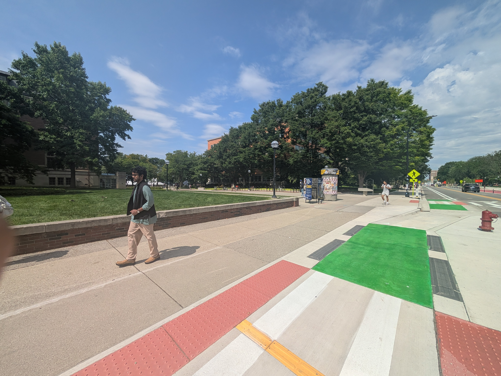
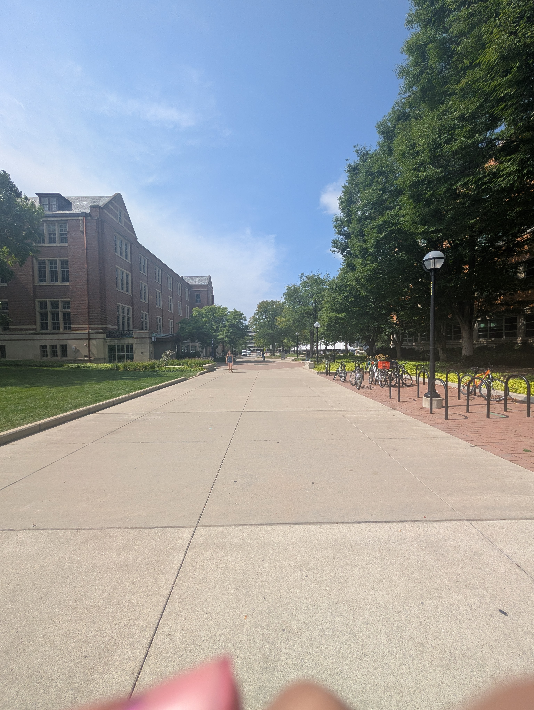
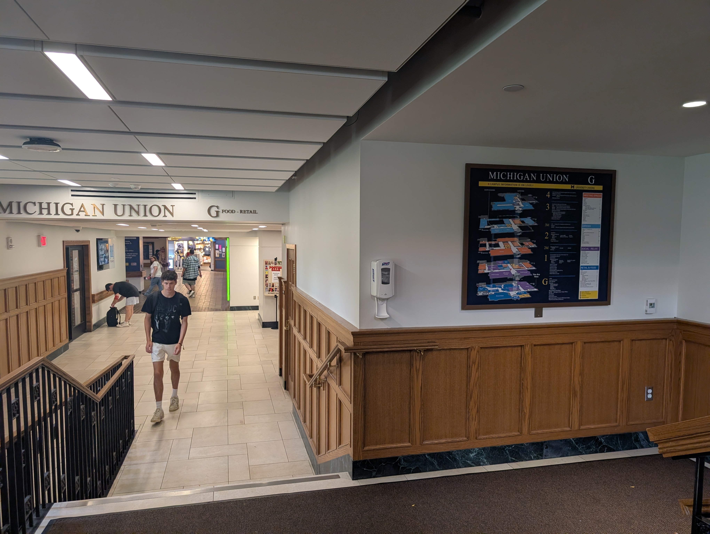

Spatial Wayfinding & Digital IxD
· Week 1
First class assignment. Finding a spot near campus and observing how the space communicates how to interact with it, affordances it gives, and confirmation it gives. Analysing how this related to digital interaction desgin as well.


